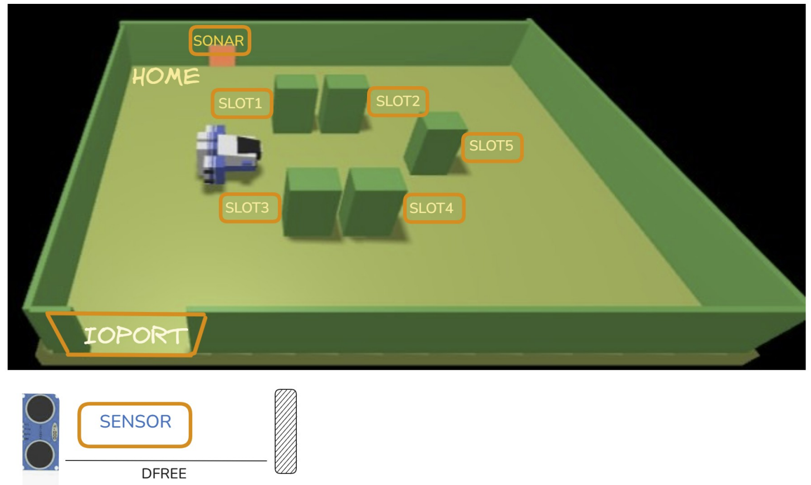
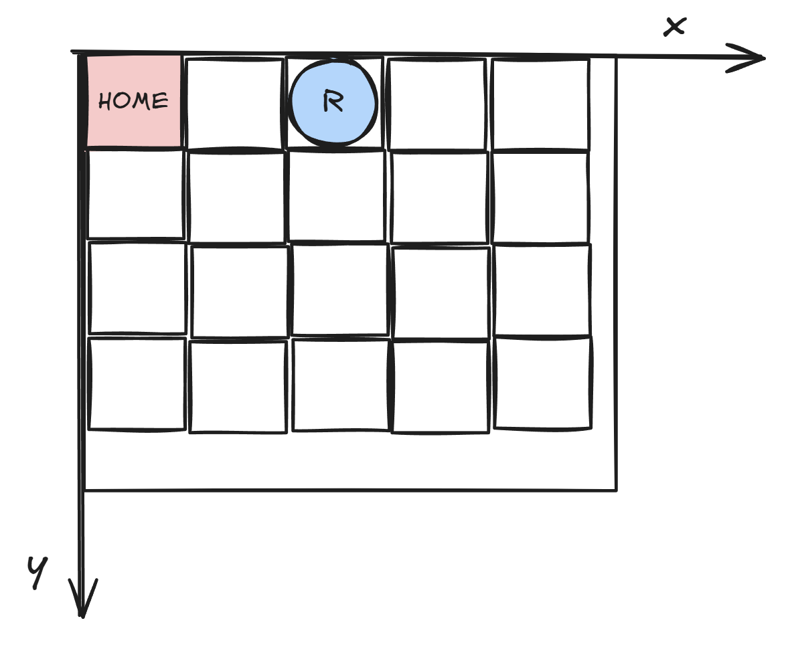
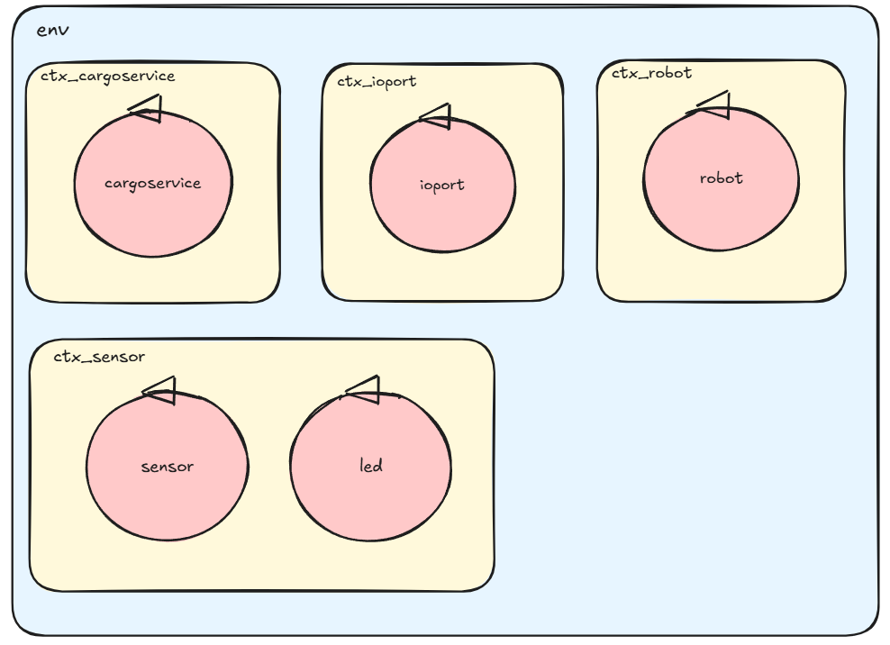

and Francesco Roffia
and Francesco Roffia  GIT repo: https://github.com/FRoffia/ISS_26_Cargoservice
GIT repo: https://github.com/FRoffia/ISS_26_Cargoservice

The company asks us to build service named cargoservice that should work as follows.
The cargoservice is able to receive a request to load a container sent by some customer by using the pushbutton of the IOPort.
retrylater, if the IOPort is currently occupied by a container or if the system is Out of service
slots1-4 are already occupied.
When the request to load is accepted, the customer must move the container in the sensor area within prefixed amount of time (e.g. 30 secs), otherwise the systems becomes disengaged. Then, the cargoservice uses the cargorobot to move the container from the IOPort to the slot5 (for marking the container) and then to the reserved slot.
The service must also show on the display on the IOPort:
La
Definiamo un sistema di coordinate discrete, ottenute astraendo il robot che si muoverà al suo interno come un cerchio di raggio r (anche questo deducibile da foto dei requisiti), e quindi suddividendo l'area della hold in quadrati di lato 2r.
Questo si riflette nel modello come una matrice di interi int[][] hold, di dimensione width(B/2r) * height(H/2r).

public Class Hold{
private int[][] hold;
private int width; // width*2r < B < width*(2r+1)
private int height; // height*2r < H < height*(2r+1)
private int number_of_slots n;
private boolean slots_reservations[];
public Hold(int B, int H, int r, int n, int[][] slots_coordinates){
//inizializzazione dimensioni dell'hold da dati in input
width = B/(2*r);
height = H/(2*r);
hold = new int[H][W];
//inizializzazione dello spazio dell'hold a 0, quindi vuoto
for(int i = 0; i < height; i++){
for(int j = 0; j < width; j++){
hold[i][j] = 0;
}
}
this.n = n;
slots_reservations = new boolean[n];
//posizionamento statico degli slots e inizializzazione reservation a false, free
for(int i = 0; i < n; i++){
int slot_x = slots_coordinates[n][0];
int slot_y = slots_coordinates[n][1];
hold[slot_y][slot_x] = n+1;
slots_reservations[n] = false;
}
public void freeSlot(int slot_id){
slots_reservations[slot_id - 1] = false;
}
public void reserveSlot(int slot_id){
slots_reservations[slot_id - 1] = true;
}
public boolean isSlotReserved(int slot_id){
return slots_reservations[slot_id - 1];
}
}
}
La
Logicamente, la IOPort è composta da:
Il
Data una distanza DFREE, valgono le seguenti proprietà:
D < DFREE/2 = container presente, IOPort occupata DFREE/2 <= D <= DFREE = misurazione valida, IOPort libera D > DFREE per più di 3 sec = sistema entra in Out-of-Service
Emette periodicamente verso
Dispatch sensordata : sensordata(D) // distanza grezza misurata
Il
Il
La logica di business principale è composta da:
L'architettura logica è descritta nell'immagine. Abbiamo deciso di creare l'attore
Il
Il
le informazioni utili (ad esempio quando l'utente deposita il container), al posto di inviare i dati grezzi della distanza D.
In questo modo abbiamo una divisione netta dei ruoli e dei domini.

cargoservice (ctx_cargoservice) ↔ ioservice (ctx_io)
Request load_request : load_request(X)
Reply load_accepted : load_accepted(SLOT) for load_request //1 | 2 | 3 | 4
Reply load_rejected : load_rejected(REASON) for load_request //full | out_of_service
Reply retrylater : retrylater(X) for load_requestDispatch setDisplay : setDisplay(MSG) //testo sul display
Dispatch setLed : setLed(STATE) //off | blinkcargoservice (ctx_cargoservice) ↔ sensorservice (ctx_sensor)
Request check_container : check_container(X)
Reply container_present : container_present(X) for check_container
Reply container_absent : container_absent(X) for check_containerDispatch containerIn : containerIn(X) //container rilevato all'IOPort
Dispatch containerOut : containerOut(X) //container rimosso
Dispatch sensorError : sensorError(X) //sensor guasto: outOfService
Dispatch sensorReady : sensorReady(X) //sensor ok: recovery da outOfServicesensor → sensorservice (interno a ctx_sensor)
Dispatch sensordata : sensordata(D) //distanza misurata, periodicacargoservice ↔ cargorobot (interno a ctx_cargoservice)
Request do_move : do_move(DEST) //home|slot1..5|ioport
Reply move_done : move_done(ARG) for do_move
Reply move_failed : move_failed(CAUSE) for do_movecargorobot (ctx_cargoservice) ↔ robotsmart (ctxrobotsmart)
Request buildPlan : buildPlan(PX,PY,TX,TY)
Reply buildPlanDone : buildPlanDone(PLAN) for buildPlan
Request doplan : doplan(PLAN, STEPTIME)
Reply doplandone : doplandone(ARG) for doplan
Reply doplanfailed : doplanfailed(PLANTODO) for doplan
I test sono scritti in Java (JUnit).
Sono dei test preliminari, verranno implementati nello Sprint1 e potrebbero cambiare sintatticamente.
Prima di ogni test il sistema è avviato e
@Test
public void testT01() throws Exception {
String req = CommUtils.buildRequest("tester", "load_request", "load_request(client1)", "cargoservice").toString();
String resp = conn.request(req);
assertTrue("T01: load_accepted con slot assegnato", resp.contains("load_accepted"));
}
@Test
public void testT02() throws Exception {
//porta il sistema in ENGAGED
String req = CommUtils.buildRequest("tester", "load_request", "load_request(x)", "cargoservice").toString();
conn.request(req);
//simula sensorservice: container rilevato all'IOPort (dispatch asincrono)
conn.forward(CommUtils.buildDispatch("tester", "containerIn", "containerIn(x)", "cargoservice").toString());
CommUtils.delay(8000); //attendo finisca la normale operazione
//una nuova richiesta deve essere accettata (sistema tornato in DISENGAGED)
String req2 = CommUtils.buildRequest("tester", "load_request", "load_request(x)", "cargoservice").toString();
String resp2 = conn.request(req2);
assertTrue("T02: sistema tornato in DISENGAGED dopo carico", resp2.contains("load_accepted"));
}
@Test
public void testT03() throws Exception {
String req = CommUtils.buildRequest("tester", "load_request", "load_request(x)", "cargoservice").toString();
String resp = conn.request(req);
assertTrue("T03 setup: richiesta accettata", resp.contains("load_accepted"));
//non piazzo un container, attendo scadenza timer (5 secondi per testare)
CommUtils.delay(6000);
//lo slot deve essere stato liberato
String req2 = CommUtils.buildRequest("tester", "load_request", "load_request(x)", "cargoservice").toString();
String resp2 = conn.request(req2);
assertTrue("T03: slot liberato dopo timeout", resp2.contains("load_accepted"));
}
@Test
public void testT04() throws Exception {
//invio richiesta di carico
String req = CommUtils.buildRequest("tester", "load_request", "load_request(x)", "cargoservice").toString();
String resp = conn.request(req);
assertTrue("T04: hold piena - load_rejected", resp.contains("load_rejected"));
}
@Test
public void testT05() throws Exception {
//simulo sensor guasto
conn.forward(CommUtils.buildDispatch("tester", "sensorError", "sensorError(x)", "cargoservice").toString());
CommUtils.delay(300);
//invio richiesta di carico
String req = CommUtils.buildRequest("tester", "load_request", "load_request(x)", "cargoservice").toString();
String resp = conn.request(req);
assertTrue("T05: out_of_service - retrylater", resp.contains("retrylater"));
}
@Test
public void testT06() throws Exception {
//porto il sistema in OUT_OF_SERVICE
conn.forward(CommUtils.buildDispatch("tester", "sensorError", "sensorError(x)", "cargoservice").toString());
CommUtils.delay(300);
//simulo fine guasto
conn.forward(CommUtils.buildDispatch("tester", "sensorReady", "sensorReady(x)", "cargoservice").toString());
CommUtils.delay(300);
//invio richiesta di carico
String req = CommUtils.buildRequest("tester", "load_request", "load_request(x)", "cargoservice").toString();
String resp = conn.request(req);
assertTrue("T06: recovery - sistema torna in DISENGAGED", resp.contains("load_accepted"));
}
@Test
public void testT07_ContainerAlreadyAtIoport() throws Exception {
//setto lo stub del sensoreservice in stato "container presente"
sensorStub.setContainerStatus(true);
//invio richiesta di carico
String req = CommUtils.buildRequest("tester", "load_request", "load_request(x)", "cargoservice").toString();
String resp = conn.request(req);
assertTrue("T07 setup: richiesta accettata", resp.contains("load_accepted"));
CommUtils.delay(8000); //attendo finisca l'operazione
//sistema tornato in DISENGAGED: nuova richiesta accettata
sensorStub.setContainerStatus(false);
String req2 = CommUtils.buildRequest("tester", "load_request", "load_request(x)", "cargoservice").toString();
String resp2 = conn.request(req2);
assertTrue("T07: carico avviato con container già presente", resp2.contains("load_accepted"));
}
Lo